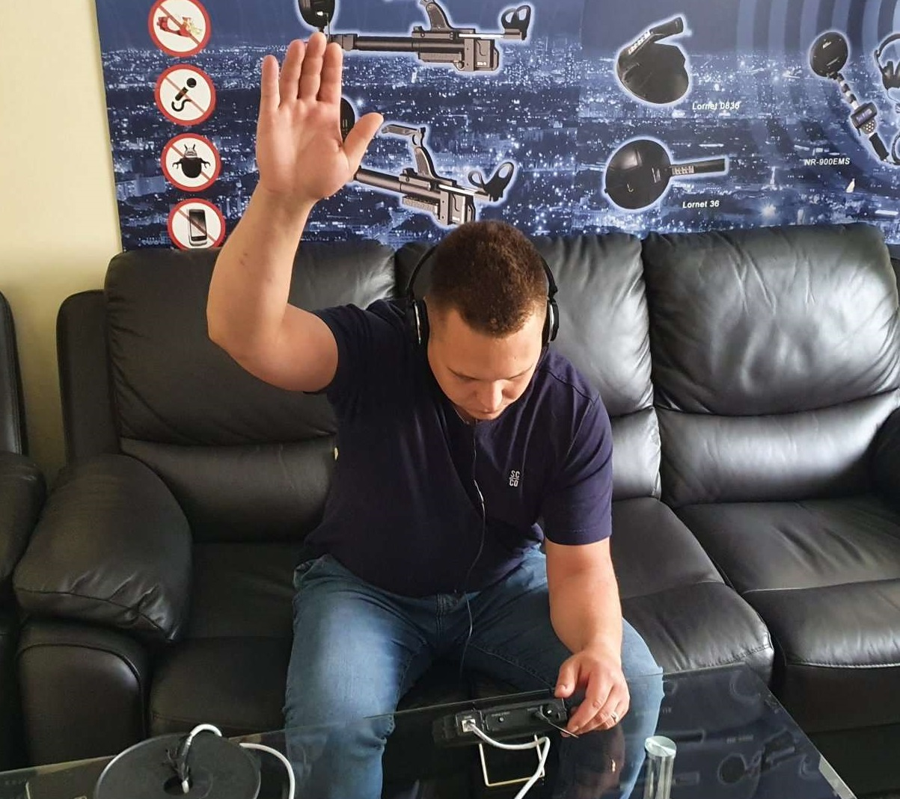

")
Practical review of the ST-301 capabilities
ST-301”SPIDER” Wire lines Analyzer is designed for checking out any type of wire line including coaxial cables. Please note that this device is designed to detect and localize eavesdropping devices that are galvanically connected to power mains and low-current cables.
In the ST 301, passive and active modes of operation are used to detect enabled, switched off, or faulty eavesdropping devices. Let’s stop here for a second. Above I have mentioned that device has “active” and “passive” modes of operation. Meaning that Active mode sends out a signal into the line and then receives a response. Passive on the other hand only receives the signal from the wire line.
The advantage of this device is, that it contains 4 devices in one body( not a joke). The main modes of operation are:
• Low frequency amplifier
• Wire Line receiver
• Wire non linear junction detector
• Reflectometer
That’s 4 different devices in one.
Before we begin our review of capabilities of the mentioned device, let us review the data leakage channels.
VIBRO-ACOUSTIC CHANNELS – In vibro-acoustic channels of information leakage the distribution environment of speech signals are building constructions( walls, floors, ceilings) and engineered communications (heating systems, ventilation shachts and so on). For interception of speech signals, vibro-sensors (accelerometers) are being used. Vibro sensor connected to the electronic amplifier is called an electronic stethoscope. Electronic stethoscope enables the listening to the speech using head phones and recording to the dictaphone. Through vibro-acoustic channel interception of information using embedded devices is also possible. For transmission of information radio channel is used and the devices are called radio stethoscopes. Also embedded devices with transmission of information through optical channel in the near infrared wavelength diapason and ultrasound devices, are being used (in the engineered communications).
ACOUSTOELCTRONIC CHANNELS - Acoustoelectronic channels of information leakage appear using, transformations of acoustic signals in to electronic. Some elements of main technical tools and systems, transformers, induction rolls, electromagnets of secondary electro casts, telephone ring bells and so on, have the ability to change its parameters (capacity, inductivity, resistance) under the influence of acoustic field, created by the origin of the speech signal. Main technical tools and systems can have acoustoelectrical converters. Some types of fire alarms and security detectors, relaying network loudspeakers and so on. The interception of acoustoelectric fluctuations is made through connection lines to main technical tools and systems using high-sensitivity low frequency amplifier.
OPTIC-ELECTORNIC (LASER) CHANNEL - Optic-electronic (laser) channel of speech information leakage is made by irradiating using laser beam, of the surface of the reflective surfaces of the premises (window glass, mirrors and so on). The reflected laser emissions are modulated at the amplitude and faze, and received by the laser emission receiver, when modulated speech information can be acquired for interception of which complex laser systems are being used.
ACOUSTOELECTROMAGNETIC CHANNEL (Parametric channel) - Acoustoelectromagnetic or as it is also called Parametric information leakage channel, appears in result of the influence of acoustic field to the elements of high frequency generators. As a result of such cables in the induction element (dimension between loops), drossels, places between the air condesator plates and so on., which can result in changes of the parameters of the high frequency signal, for example, modulation of the information signal, high frequency fluctuations can be intercepted and detected by the means of radio surveillance.
Parametric channel of information leakage can be made using “high frequency irradiation“ of the premise, where semi-active embedded devices, having elements, some parameters of which (for example: quality and resonance frequency of the voluminous resonator) changes according to the changes of the acoustic (speech) signal. For interception of information through this channel besides the embedded device, special transmitter with directed antenna and receiver, are needed.
Usually the typical scheme of an eavesdropping device looks like this:

• Radio channel
• Wired channel
• Optical infrared channel
For detection of eavesdropping devices operating through radio channel and optical channel we have the device called ST-500”Piranha”. For the in-depth checkup of all types of wire lines in the controlled premise it is recommended to use ST-301”SPIDER”.
UNMASKING FEATURES
In the table listed below You can review the unmasking features of different types of eavesdropping devices.

• Heterogenity in the wireline;
• Nonlinearity in the wireline;
• Voltage in the wireline;
• Low frequency signal in the wirelines;
• High-frequency signal in the wireline;
• HF traffic in the wireline, when the handset is laid.
The Analyzer is designed to detect and localize eavesdropping devices that are galvanically connected to power mains and low-current cables. In the ST 301, passive and active modes of operation are used to detect enabled, switched off, or faulty eavesdropping devices.
Functionally the Analyzer consists of four components (DEVICES):
1. LOW FREQUENCY AMPLIFIER (LFA)
2. WIRE RECEIVER (WR)
3. NON-LINEAR JUNCTION DETECTOR (NLJD)
4. REFLECTOMETER (REF)
- detection and the analysis of signals cable (dynamic and electret) microphones in low-current cables;
- activation of electret cable microphones by giving to the cable of bias voltage for their detection;
- detection of signals of the eavesdropping devices transferring information on power mains and low-current cables in frequency range of 100 kHz - 180 MHz;
- detection of unauthorized galvanic connections to the cables using a NLJD and the REF;
- measurement of AC and DC voltage in the low-current cables.
THE DELIVERY SET
Main unit
Charger of the main unit
Flash card
Mini-USB patch cord
Television splitter
Headphones
Adapter for testing of the power mains
TV(m)/F(m) adapter
TV(f)/F(m) adapter
TV(f)/TV(f) adapter
RJ11 (1/2) splitter
RJ45 (1/2) splitter
RJ11 socket
RJ45 socket
RJ45 short-circuit socket
Adapter and screwdriver for connecting to the multi-wire cable
Cable storage bag
Television cable TV(f)/TV(m)
Patch cord RJ45/TV(m) for connecting to the TV socket TV(f)
Patch cord for connecting to the RJ45 PC socket
Patch cord for connecting to the RJ11 telephone socket
Patch cord with a needle for connection to the cable shield
Case
As shown on the picture

-Forming and generating probing signals to the cables;
-Switching control of the tested multi-wire cables;
-Analysis of incoming signals and responses of probing signals;
-Analyzer modes control.
The appearance of the main unit is shown in the picture below:

2 PHONES Slot for connection of headphones
3 SHIELD Slot for connection of the shield of the tested cable
4 INPUT Input connector of the Electronic Switch
5 Analyzer monitor
6 Keyboard
F1-F4 "Hot" buttons which purpose depends on the set operation mode
ESC Action canceling button (return on "one step")
FUNC Button for turn on of various modes
ENTER Button for confirm action
MODE Button to call the mode selection menu
7 Accumulator charge indicator
8 Slot for connection of the charger
9 Mini-USB connector for connection to the PC
10 Information plate with the serial number
11 Support
12 Integrated speaker phone
The adapter ( item 9) is used for connect the main unit to the tested power mains. LED indicator in the plug, indicates the presence of voltage in the tested cable. The adapter has the RJ45 plug. The contacts #1 and #2 are connected. Other contacts are not involved.
PATCH CORD FOR CONNECTING TO THE PC SOCKET (RJ45)
Standard patch cord (Fig.1, item 22), is used for connect the main unit to RJ45 PC socket. GENERAL INFORMATION
PATCH CORD FOR CONNECTING TO THE TELEPHONE SOCKET (RJ11)
The patch cord (Fig.1, item 23) is used when testing the telephone cable that are equipped with RJ11 sockets.
The patch cord is equipped with RJ45 and RJ11 connectors. On the RJ45 connector six contacts are involved (#2 - #7). Two extreme contacts (#1 and #8) are not connected.
PATCH CORD RJ45/TV(M) FOR CONNECTING TO THE TV SOCKET TV(F)
The patch cord (Fig.1, item 21) is used when testing television receivers, cable and terrestrial television cables.
The cable is equipped with RJ45 and TV(f) connectors. On the RJ45 connector, only two extreme contacts (#1 and #2) are involved. Other contacts are not connected.
PATCH CORD WITH A NEEDLE FOR CONNECTING TO THE CABLE SHIELD
The patch cord with a needle (Fig.1, item 24) is used when testing multi-wire shielded cables, the screen of which is not connected to the connector. It connects to the "SHIELD" connector of the main unit. On the wire there is a pin plug and a needle probe. The needle pierces the outer insulation of the cable under test and provides contact with the screen.
ADAPTER FOR CONNECTING TO THE MULTI-WIRE CABLE
The adapter (Fig.1, item 18) is used to connect low-current cables with no connectors. When connecting such cables (twisted pair type), it is recommended to take into account the color scheme of wires of a cable (item 10.3).
PLAYER OF THE TEST SOUND (PTS)
PTS purpose (Fig.1, item 3):
-creation of obviously known acoustic signal. Listening of this signal by means of ST 301 means existence in the room of the active eavesdropping device with an uncoded transmission channel;
-turning on of eavesdropping devices equipped with the VOX activation option;
- creation of "the masking noise" during the testing;
PTS used a removable USB-drive. The user can record the sound files (music, people talking, machinery noise), which are optimum corresponding to specifics of a testing.
Charging is carried out by means of a cable (Fig.1, item 4).
RJ45 SHORT-CIRCUIT SOCKET
This socket (Fig.1, item 17) is used for short circuit of all wires of the cable equipped with the RJ45 connector at its test by NLJD.
MINI-USB PATCH CORD
Mini-USB patch cord (Fig.1, item 6) is used to connect the main unit to the USB port of a PC. GENERAL INFORMATION
SPLITTERS AND ADAPTERS
The Analyzer kit contains a set of splitters and adapters used to test various types of cables. Options for their use are described in item #2 ("Connecting to the cables").
POWER SUPPLY
The operation of the Analyzer is allowed only from the built-in accumulator. A fully charged accumulator provides the Analyzer operation for 3 hours. The accumulator charge level is shown in the Information line (Fig.22, item 3) on the screen. The accumulator is charged using the charger (Fig.1, item 2). To do this, insert the charger plug into the connector (Fig.2, item 8) on a side panel of the Analyzer and connect the charger to the 220 V / 50 Hz power mains. Charging is followed by a red luminescence of the indicator of connection of the charger (Fig.2, item 7) on a side bar of the Analyzer. Full charge time is not more than 5 hours. When charging is complete, the indicator changes from red to green.
It is forbidden to charge the accumulator during operation of the Analyzer!
Now let us review the connection of the device to different types of outlets. On this picture You can see the connection of the device to the mains of 220V.

Local area networks

And many more options of connecting the device to different types is available.
Such as connecting the device to a nine pin cable and checking out the SHIELD(ground).

Also as previously mentioned device can be used for checking coaxial cables.

And many more.
More information about the technical capabilities is available in the User manual of the device.
Turning ON the device
To turn on the device, turn the ON/OFF volume clockwise. While turning You will hear a click and the screen of the device will turn on.

On the screen of the device You will see the name of the manufacturer, name of the device, designation and version of the firmware.
To enter the mode selection screen press ENTER, afterwards device switches to the mode selection screen.

In the upper side of the screen we can see:
Time
Battery charge
Then there are squares with names of the modes, such as:
LFA (Low Frequency Amplifier)
WR (Wired receiver)
NLJD (Wire nonlinear junction detector)
REF(Reflectometer)
All the above mentioned modes can be entered by pressing F1 F2 F3 or F4
As previously mentioned device has two active channels and two passive channels.
Active channels send a signal in to the line and receive the response, the passive channels only receive the incoming signals.
In the settings menu following data can be set manually:
Date
Time
Language (English/Russian)
LOW FREQUENCY AMPLIFIER mode
LFA is designed to detect low-frequency signals of eavesdropping devices in low-current cables. Signal analysis is performing using graphical information (oscillogram or spectrogram) and acoustic information (via headphones or the built-in speaker), but before using this mode it is necessary to select the pair of wires we are going to work with. Device has a built-in electronic switch. Where the operator has the ability to select to the type of the cable and so on.
The operational scheme of the LFA looks like this:

Following actions are available:
Switch setting;
connection a pair of wires in the MANUAL mode;
gain setting;
apply bias voltage to cable;
acoustic signal analysis on the connected pair of wires;
measurement of values of AC and DC voltage on the connected pair of wires;
signal analysis on the connected pair according to the oscillogram and the spectrogram;
automatic testing all combinations of wires of the connected cable with a possibility of acoustic signal analysis of each combination. Speaking of which, for example when we looking for, lets say, an electret microphone or a dynamic microphones galvanically connected to the wire line using the LFA mode of the device, we can add BIAS voltage, increase the gain of the receiver and so on.
In this test we are going to try and discover it.
Following equipment will be used:
Test for electret and dynamic microphones (camouflaged as a modem)
ST-301”SPIDER” and ST-402”CAYMAN”
Wires with RJ45 connectors.
TEST 1
1.Turn on the device
After the device turns on the screen, you can see following information.
1- Name of the manufacturer
2- Name of the device
3- Device designation
4- Version of the firmware
2. Connect the wireline that is going to be checked, to the device.
3. Turn on the LFA mode by pressing ENTER
Or by pressing F1
On the screen You will see a table looking like this

1. Name of the channel
2. Number of pair
3. Battery charge
4. Time
5. Sub modes
6. Highlighted pair
7. Gain
8. Bias voltage controls
9. Number of pairs
10. Voltage DC
11. Voltage AC
4. Press F4 to Scan all
5. If we are looking for electret microphones (microphones that require electricity to operate). After supplying BIAS voltage. If there is an electret microphone present on that pair. On the screen, the operator will see following information.
6. If you are looking for a dynamic microphone then it is necessary to increase the gain of the Low frequency amplifier.
The technique looks like this:
One operator checks the wire line using the ST-301”SPIDER”. Upon the detection of the sound coming from the sound emitter, the other operator takes the sound emitter and walks around the room checking all walls, ceiling, etc.
When the operator operating the ST-301”SPIDER” hears that the sound from the sound emitter is getting louder. That means that the operator operating the sound emitter is getting closer to the eavesdropping device. Upon stumbling on the point where the eavesdropping device is located, the ST-301”SPIDER” operator raises his hand to signal the approximate location of the eavesdropping device.
The whole process can be seen on the pictures below:
One of the operators moves around the room with the acoustic emitter.

Please note that there are three connection types that may occur while checking the wirelines

The first connection type is parallel connection, the eavesdropping devices is supposedly connected to two wires. One is + another one is -. The only variable in this type of connection is polarity. In the ST-301”SPIDER” LFA mode, the operator has the opportunity to change the polarity of BIAS voltage, therefore activate the supposed electret eavesdropping device.
Next connection type is Continuous connection. This connection type utilizes only one wire. Meaning the supposed eavesdropping device can be connected to one wire (both + and -). In this case when detecting such connections, it is necessary to close the circuit. In the delivery set of the ST-301”SPIDER” there is a special connector marked with red band in the middle (nr.17 in the delivery)
The last connection type is Exotic connection in this case the supposed eavesdropping device uses cable shield as a second wire in a circuit. Meaning that one part of the power supply of the eavesdropping device connected to the wire and another part connected to a 9th cable or a cable shield. One the pictures 5A, 5B, etc. we can see the checking of such type of connection.
More information about testing of ST-301"SPIDER" capabilities, You can find in our other publication, listed below: